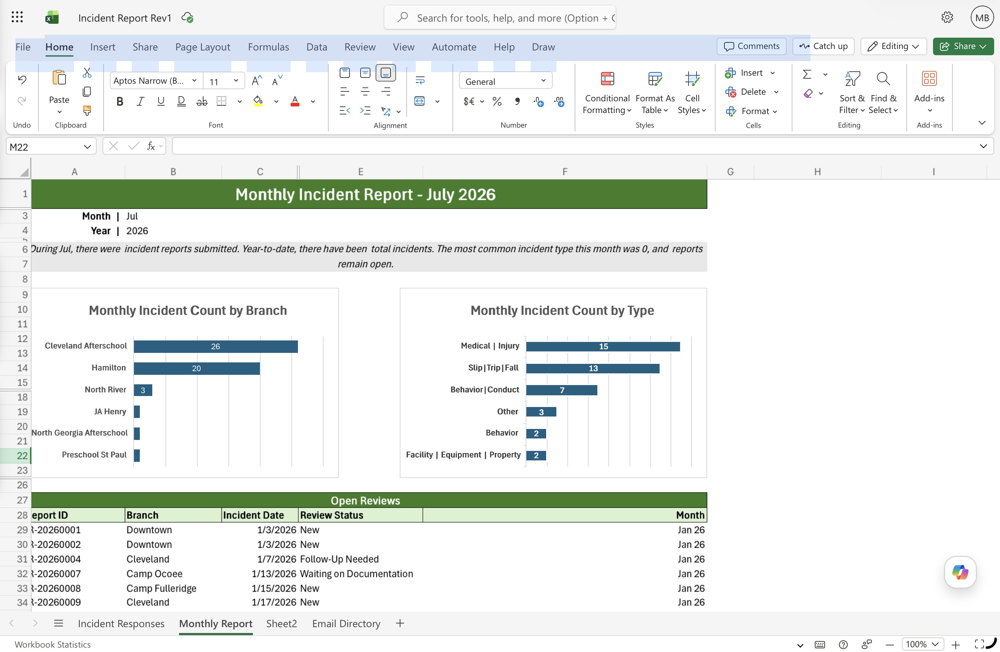

Power Automate
Automated workflows, conditional logic, notifications, approvals, document generation, and system integrations.
Business Process Automation Portfolio
I design practical business solutions using Power Automate, Excel, Office Scripts, HTML, CSS, Power Query, and AI. My work reduces repetitive tasks, improves reporting, and creates more reliable operational processes.

Mathia Blomstrom
Automation • AI Operations • Process Improvement
About Me
I combine operational leadership, process improvement, data analysis, and user-centered design to build tools that solve real business problems.
I am especially interested in workflows that eliminate repetitive work, create more consistent reporting, and make information easier for teams to use.
My goal is not simply to automate a task. I focus on creating solutions that are understandable, maintainable, and useful to the people who rely on them.
Capabilities
A blend of automation, reporting, design, and operational problem-solving.
Automated workflows, conditional logic, notifications, approvals, document generation, and system integrations.
Dashboards, reporting tools, formulas, data cleanup, transformations, structured tables, and KPI tracking.
TypeScript-based Excel automation for formatting, calculations, record updates, and report preparation.
Responsive emails, web pages, automated documents, professional layouts, and user-friendly interfaces.
Trend analysis, year-over-year comparisons, reporting, KPI interpretation, and data storytelling.
AI-assisted workflows, documentation, content generation, process support, and operational problem-solving.
Selected Work
Each project begins with a business problem and ends with a more efficient, consistent, and usable process.
Power Automate Workflow
A multi-step automation that converts digital form submissions into standardized, professionally formatted incident reports.
Problem
Staff were manually formatting incident reports, which required additional administrative time and made it difficult to maintain a consistent report structure.
Solution
I created a workflow using Microsoft Forms, Excel, Office Scripts, Power Automate, HTML, and Outlook. The system collects the information, processes the data, generates a formatted report, and emails it to the appropriate recipients.
Automated Workflow
Staff submit incident information through a digital form.
Microsoft Forms

Form responses are stored in a structured Excel table.
Excel - Form Response Data

Excel - Incident Data

Excel - Reporting Data

The script processes and formats the submitted information.
Office Scripts

The workflow runs the automation and generates the report.
Power Automate

Incident information is formatted into a professional report.
HTML Report

Results
How I Work
Identify the current process, pain points, users, risks, and desired outcome.
Document inputs, owners, conditions, exceptions, systems, and final outputs.
Create the workflow, test different scenarios, and improve usability.
Review results, gather feedback, document lessons, and refine the solution.
What My Work Prioritizes
Less repetitive administrative work
More consistent documentation and communication
Better visibility into data and performance
Systems that are easier for teams to use and maintain